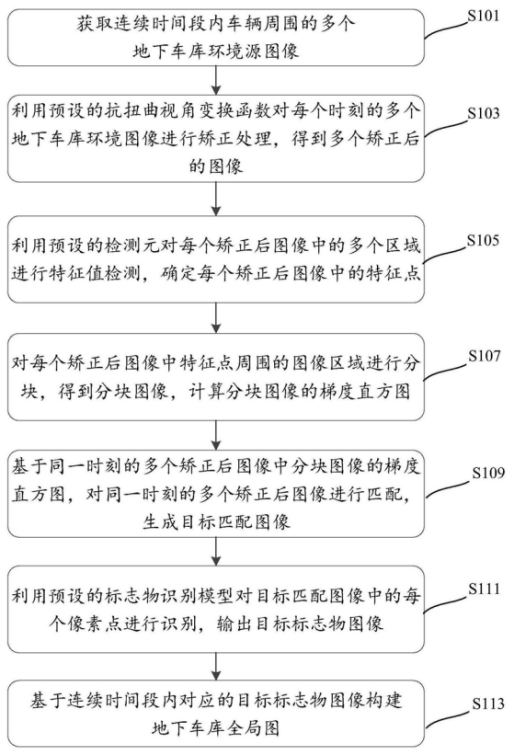

Independent running point test of Intel Xe DG1 produced by ASUS
H
1
In January this year, Intel announced the DG1 independent graphics card in the form of a PCI slot, sharing similar parameters with the mobile iris Xe max, but the EU units were reduced to 80 groups, and ASUS was one of the first cooperation members at that time.
A few days ago, tum, a good source of information_ Apisak shared the unique running information of ASUS Xe DG1. In addition to 80 sets of EU, other specifications include 4GB lpddr4x-4266 video memory (128bit), 1500mhz frequency and 30W TDP.
In the basemark GPU Vulkan test, ASUS DG1 scored 17289, lower than the rx550 score of AMD four years ago. Weaker than the bright card four years ago
RX 550 is based on Polaris Polaris Polaris core, 10 groups of Cu units, 1183mhz frequency, 128bir 4GB gddr5 video memory, and the power consumption of the whole card is 50W.
Considering the performance of dfg1, the performance of "weak chicken" and the need to be used with generation 9 core and 10 generation core (b460, H410, b365 and other chipset platforms).
Of course, DG1 may just be the appetizer of Intel's small trial. It is said that DG2 positioning game graphics card supports ray tracing and Intel's supersampling technology, and its performance may be as good as RTX 3070.